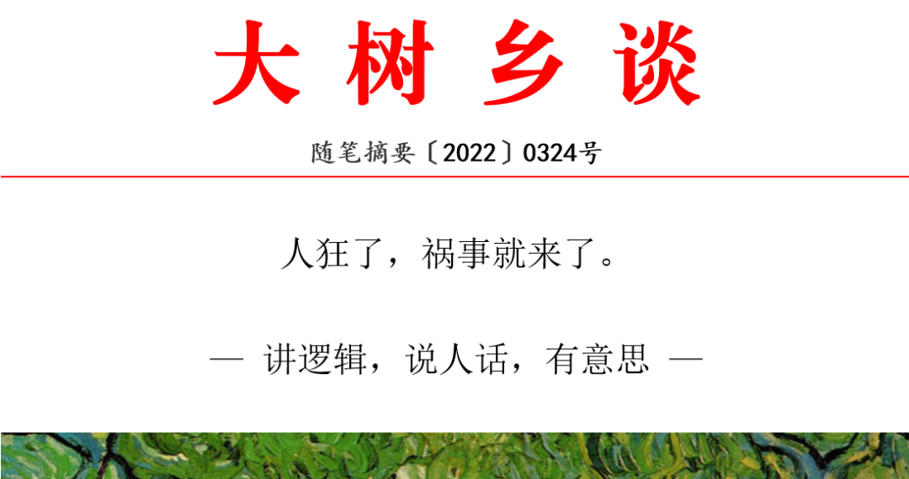

别把平台当成自己的能力

最近不少朋友留言，核心就是觉得公务员工作没意思，想着离开体制去闯闯，来问小镇的意见。 体制内外互相羡慕对方的生活这很正常，比如小镇当年刚到北京，同处的一位前辈从入职就一直说要离开体制，要去公司、要创业等等，觉得现在的收入实在太菲薄了，看看当年同学选择在体制外的，现在的生活和收入差距实在太大。 小镇了解这位同事，他这么说是因为很有把握，毕竟也在外面工作过，有经验。 但是还有很多人，严重高估了自己的能力。比如有一个朋友，多年以前曾经对小镇说，某某集团董事长特别看重他、经常求教他，还说邀请他去这个集团拿高薪等等，他自己也觉得理所当然。
还有的一些行业主管部门，仅仅刚进来三、五年，就觉得出去以后怎么也得年薪百万；还有的天天把跟某某省部级领导的交流等等当作谈资，对外把自己的工作介绍得格外高大上。 其实小镇也有不少这种经历，这些年光说在一桌吃过饭的省委书记、省长也有几十位了，当面的时候人家大领导也是对小镇各种肯定，具体的不多说了。但说白了，人家领导纯粹把小镇当作一个摆设或者象征，真正尊敬的是小镇陪同的领导以及代表的部门。 不仅仅国家层面，地方各级也都类似，包括很基层的公职人员，也往往觉得自己挺厉害。
这都是幻觉，甚至是另类的“精神鸦片”，一个大平台，对个人的赋能实在太大，大到超过一个人自然成长所能承受的限度，仅仅是通过一次考试、一次招聘，就突然具有了依靠自己个人可能一辈子都无法得到的地位和能量，想不迷失也确实难。 对这种事小镇现实中不好泼凉水，但是在网上就大可以说一说了：凡是身在大平台的，一定要好好想想，自己过去做到的、现在能做的以及受到的尊重和夸赞，又或者得到的很多物质和精神回报，到底有多少是靠自己的能力？ 倘若突然离开这个平台、失去这个身份，曾经拥有的一切还能留下多少？ 小镇不是否定大平台，能身在大平台无疑是大好事，毕竟大树底下好乘凉，没有必要刻意增加人生难度，能进入大平台也是个人能力和机遇的体现，没啥可惭愧的。
但是一定要有风险意识，绝对不能飘飘然。 切记切记，当一个人开始自大狂妄的时候，祸事就不远了，而一旦祸事临头，周围原本美好的一切一瞬间就会被颠覆，这样的体验非常非常痛苦，很多人未必能再爬起来，一定要珍惜现在、筹谋未来。
其他文章推荐
■ 2022年中国房地产政策、房价及个人选择
如果喜欢，还请点赞、“在看”和关注吧 欢迎分享，让更多人发现“大树乡谈”